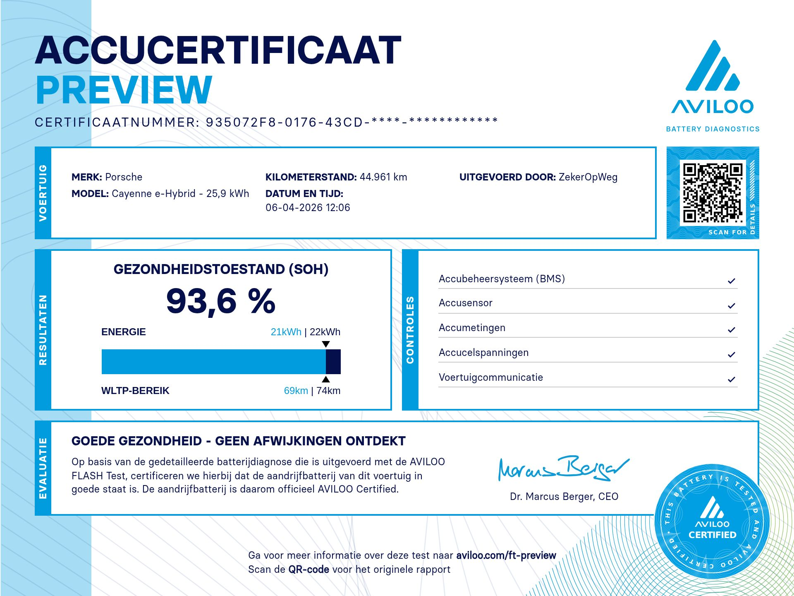

Waarom een Porsche PHEV extra aandacht verdient
De Cayenne E-Hybrid en Panamera E-Hybrid zijn populaire zakelijke leaseauto's. Ze komen in grote aantallen als leaseretour op de occasionmarkt. Het probleem: veel zakelijke rijders laden nauwelijks. De accu reist als ballast mee in een benzineauto.
Een BMS-uitlezing toont het gemiddelde van het accupakket. Afwijkende cellen door structurele ontlading zijn onzichtbaar totdat ze merkbaar worden in het elektrische rijbereik. Bij een aankoopprijs van €80.000 tot €180.000 is dat een onaangenaam moment.
De AVILOO Flash Test meet de spanning van elke individuele cel, onafhankelijk van Porsche-software en eventuele updates. In 15 minuten op locatie.
Eigen meting uit de praktijk
ZekerOpWeg voert AVILOO Flash Tests uit op Porsche occasions. Dit is een gecertificeerde meting die we zelf hebben uitgevoerd.
Goede gezondheid · Geen afwijkingen · AVILOO Certified

Welke Porsche modellen meet ik?
AVILOO ondersteunt alle gangbare Porsche PHEV en EV modellen. Dit zijn de meest voorkomende occasions.

Bij regelmatig laden degradeert de Cayenne E-Hybrid accu gemiddeld 2 tot 3% per jaar. Na 4 jaar zakelijk gebruik ligt de restcapaciteit doorgaans tussen 72 en 88%, sterk afhankelijk van laadgedrag. De grotere 25,9 kWh variant biedt meer buffer.
De Cayenne E-Hybrid is een populaire zakelijke leaseauto. Veel zakelijke rijders laden nauwelijks, waardoor de accu als ballast meereist in een benzineauto. Dit leidt tot versnelde degradatie die niet zichtbaar is in het BMS-getal. Afwijkende cellen door structurele ontlading blijven onzichtbaar totdat ze merkbaar worden in het rijbereik.
Celanalyse van alle individuele cellen van het Cayenne E-Hybrid accupakket. Detectie van afwijkingen direct zichtbaar. Vergelijking met vergelijkbare Cayenne E-Hybrid modellen in de AVILOO database. Niet beïnvloed door Porsche-software of updates.
Het grotere 25,9 kWh accupakket biedt meer buffer. Bij regelmatig laden gemiddeld 1,5 tot 2,5% per jaar. Na 4 jaar doorgaans 78 tot 88% restcapaciteit. De hogere aankoopwaarde maakt een onafhankelijke meting extra relevant.
Als topversie van de Cayenne-lijn heeft de Turbo S E-Hybrid een hoge restwaarde waarbij accustaat direct de prijs bepaalt. Bij een accu van 25,9 kWh kan zelfs een klein percentage afwijkende cellen een merkbare impact hebben op het praktisch bereik en de restwaarde.
Celanalyse van het volledige 25,9 kWh pakket. Detectie van afwijkende cellen. Vergelijking met Cayenne Turbo S E-Hybrid referentiedata in de AVILOO database. Volledig onafhankelijk van Porsche-software.
De Taycan degradeert gemiddeld 2 tot 3% per jaar. AVILOO meetdata bevestigt stabiele prestaties bij normaal gebruik. De Taycan ondersteunt 800V laden wat bij intensief gebruik de thermische belasting verhoogt.
De Taycan is een van de weinige modellen waarbij de BMS-waarde en de AVILOO-meting significant kunnen afwijken. Een Taycan kan 84% BMS-SoH tonen terwijl de AVILOO-meting 91% geeft, of omgekeerd. Porsche past via software-updates regelmatig de BMS-kalibratie aan. Bij dit model is een onafhankelijke meting extra relevant juist vanwege deze bekende divergentie.
Celanalyse van het volledige Taycan accupakket, onafhankelijk van Porsche-software. Detectie van celspanningsafwijkingen. Vergelijking met de AVILOO Taycan database. Bijzonder relevant bij dit model vanwege de bekende BMS-divergentie.
Eigen meting Taycan · Onafhankelijke verificatie
BMS-waarde van de dealer toonde 91% SoH. AVILOO Flash Test bevestigde 91,6% met stabiele celspanningen. Geen afwijkingen. Koper kocht met volledig inzicht.
De Panamera E-Hybrid deelt zijn accuarchitectuur met de Cayenne E-Hybrid. Bij regelmatig laden gemiddeld 2 tot 3% per jaar. Na 4 jaar doorgaans 72 tot 85% restcapaciteit.
Populaire zakelijke occasion in het premium segment. Hetzelfde laadgedrag-risico als de Cayenne: zakelijke rijders die nauwelijks laden laten de accu structureel ontladen. Bij een aankoopprijs van €80.000 tot €150.000 is een onafhankelijke accucheck geen overbodige luxe maar een basisvereiste.
Celanalyse van het volledige Panamera E-Hybrid accupakket. Detectie van afwijkende cellen. Vergelijking met Panamera E-Hybrid referentiedata in de AVILOO database. Onafhankelijk van Porsche-software en updates.

Pepijn Westhoff
16 jaar automotive en dealerervaring. Officieel AVILOO-partner. Ik kom naar de locatie van de auto. Werkgebied: Zuid-Holland, Noord-Brabant en Utrecht.
Plan een Porsche AccuCheckTarieven
- Statistische SoH-inschatting
- Vergelijking ADAC-normen
- Marktcijfers vergelijkbare Porsche
- Toekomstprognose 2027-2031
- Celspanningsmeting alle cellen
- Onafhankelijk van Porsche-software
- Afwijkende cellen direct zichtbaar
- TÜV-gecertificeerd certificaat
- Resultaat dezelfde dag
- Op locatie bij de auto
Binnen 40 km rondom Barendrecht zijn reiskosten inbegrepen.
Porsche gevonden die je wilt kopen?
Stuur het kenteken via WhatsApp. Ik kijk direct met je mee en plan een AccuCheck in.
Stuur kenteken, ik kijk direct mee